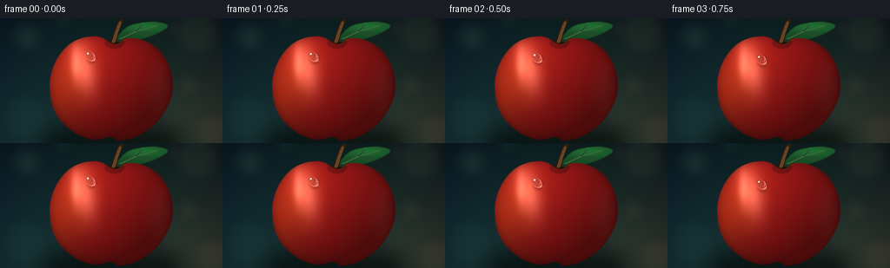
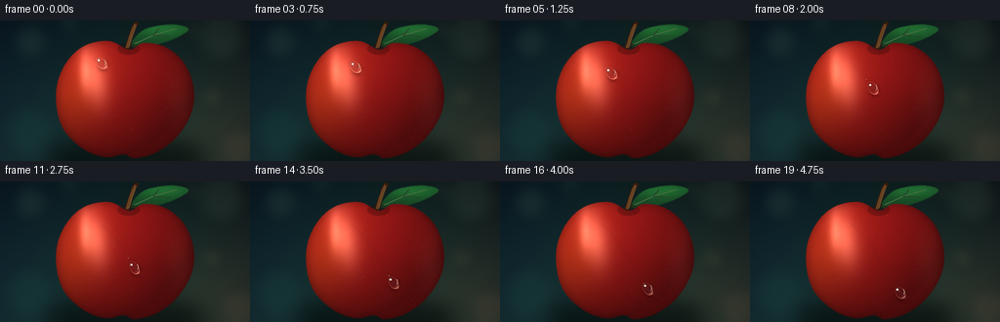
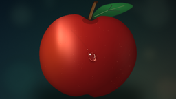

CODING AGENTS AS PIXEL WORLD MODELS
traex/GPT-5.6-Sol · phygen_038
点击播放 · 原生 RGB 像素
逐轮保存的候选
回放视频、检查图与代码变化。
每份候选均可单独播放。实际图片检查记录在下方工具轨迹中。
候选 01播放与检查图
点击播放 · 原生 RGB 像素


展开代码变化
--- 上一保存版本
+++ 本次保存版本
@@ -0,0 +1,265 @@
+from pathlib import Path
+import math
+import numpy as np
+from PIL import Image, ImageDraw, ImageFilter
+import artifact_io
+
+W, H, N, SCALE = 256, 144, 20, 4
+SW, SH = W * SCALE, H * SCALE
+ROOT = Path(__file__).resolve().parent
+rng = np.random.default_rng(38041)
+
+
+def catmull_rom(points, samples=18, closed=True):
+ p = np.asarray(points, dtype=float)
+ if closed:
+ ext = np.vstack([p[-1], p, p[0], p[1]])
+ count = len(p)
+ else:
+ ext = np.vstack([p[0], p, p[-1]])
+ count = len(p) - 1
+ out = []
+ for i in range(count):
+ p0, p1, p2, p3 = ext[i:i+4]
+ for j in range(samples):
+ t = j / samples
+ t2, t3 = t*t, t*t*t
+ q = 0.5 * ((2*p1) + (-p0+p2)*t +
+ (2*p0-5*p1+4*p2-p3)*t2 +
+ (-p0+3*p1-3*p2+p3)*t3)
+ out.append(tuple(q))
+ return out
+
+
+def logical_poly(points):
+ return [(int(round(x*SCALE)), int(round(y*SCALE))) for x, y in points]
+
+
+def rgba_composite(rgb, overlay):
+ return np.asarray(Image.alpha_composite(Image.fromarray(rgb, 'RGB').convert('RGBA'), overlay).convert('RGB')).copy()
+
+# Coordinate grids in final-image units, but sampled at supersampled resolution.
+yy, xx = np.mgrid[0:SH, 0:SW]
+X = (xx + 0.5) / SCALE
+Y = (yy + 0.5) / SCALE
+
+# Deep, softly lit macro background.
+ty = Y / H
+tx = X / W
+bg = np.empty((SH, SW, 3), dtype=np.float32)
+bg[..., 0] = 9 + 13*ty + 7*tx
+bg[..., 1] = 25 + 24*ty + 5*np.sin(tx*np.pi)
+bg[..., 2] = 27 + 20*ty + 9*(1-tx)
+# A warm patch echoes the red fruit without flattening its silhouette.
+warm = np.exp(-(((X-222)/91)**2 + ((Y-126)/65)**2))
+bg[..., 0] += 17*warm
+bg[..., 1] += 6*warm
+# Cinematic vignette.
+rad = ((X-W/2)/(W*.72))**2 + ((Y-H/2)/(H*.88))**2
+bg *= np.clip(1.04 - 0.25*rad, .62, 1.05)[..., None]
+# Low-amplitude film grain.
+bg += rng.normal(0, 0.75, (SH, SW, 1))
+bg = np.uint8(np.clip(bg, 0, 255))
+base_bg = Image.fromarray(bg, 'RGB')
+
+# Defocused circular highlights and foliage silhouettes.
+bokeh = Image.new('RGBA', (SW, SH), (0,0,0,0))
+bd = ImageDraw.Draw(bokeh, 'RGBA')
+for cx, cy, radius, color in [
+ (31, 22, 19, (114,161,121,28)), (227, 18, 25, (168,196,151,18)),
+ (217, 78, 12, (210,181,114,23)), (29, 114, 28, (34,108,84,27)),
+ (242, 128, 19, (230,144,95,17)), (194, 9, 7, (247,235,188,34)),
+ (72, 4, 11, (106,167,132,19))]:
+ bd.ellipse(((cx-radius)*SCALE, (cy-radius)*SCALE,
+ (cx+radius)*SCALE, (cy+radius)*SCALE), fill=color)
+bokeh = bokeh.filter(ImageFilter.GaussianBlur(7*SCALE))
+base_bg = Image.alpha_composite(base_bg.convert('RGBA'), bokeh).convert('RGB')
+# Soft grounding shadow.
+shadow = Image.new('RGBA', (SW, SH), (0,0,0,0))
+sd = ImageDraw.Draw(shadow, 'RGBA')
+sd.ellipse((48*SCALE, 119*SCALE, 211*SCALE, 156*SCALE), fill=(0,3,2,155))
+shadow = shadow.filter(ImageFilter.GaussianBlur(10*SCALE))
+base_bg = Image.alpha_composite(base_bg.convert('RGBA'), shadow)
+
+# Leaf behind the fruit.
+leaf_pts = catmull_rom([(134,25),(148,9),(176,4),(193,9),(175,20),(148,27)], 24)
+leaf_mask = Image.new('L', (SW,SH), 0)
+ImageDraw.Draw(leaf_mask).polygon(logical_poly(leaf_pts), fill=238)
+leaf_mask = leaf_mask.filter(ImageFilter.GaussianBlur(.35*SCALE))
+leaf = np.zeros((SH,SW,4), dtype=np.uint8)
+leaf_light = np.clip(.28 + .54*np.exp(-(((X-165)/30)**2+((Y-9)/8)**2)), 0, 1)
+leaf[...,0] = np.uint8(18 + 20*leaf_light)
+leaf[...,1] = np.uint8(52 + 75*leaf_light)
+leaf[...,2] = np.uint8(28 + 28*leaf_light)
+leaf[...,3] = np.asarray(leaf_mask)
+leaf_img = Image.fromarray(leaf, 'RGBA')
+ld = ImageDraw.Draw(leaf_img, 'RGBA')
+ld.line(logical_poly([(137,24),(157,15),(181,8)]), fill=(120,166,91,150), width=1*SCALE)
+ld.line(logical_poly([(157,15),(163,8)]), fill=(94,139,72,85), width=1*SCALE)
+ld.line(logical_poly([(157,15),(174,16)]), fill=(94,139,72,75), width=1*SCALE)
+base_bg = Image.alpha_composite(base_bg, leaf_img)
+
+# Organic apple silhouette, with broad shoulders and a small stem dimple.
+apple_control = [
+ (129,29),(112,21),(88,25),(70,40),(59,63),(58,89),
+ (66,113),(86,132),(108,140),(127,137),(138,141),(160,135),
+ (181,119),(196,94),(198,68),(188,43),(169,27),(147,23),(136,29)
+]
+apple_pts = catmull_rom(apple_control, 20)
+mask_img = Image.new('L', (SW,SH), 0)
+ImageDraw.Draw(mask_img).polygon(logical_poly(apple_pts), fill=255)
+# Tiny blur gives antialiased but crisp waxed edge.
+mask_img = mask_img.filter(ImageFilter.GaussianBlur(.28*SCALE))
+mask = np.asarray(mask_img, dtype=np.float32)/255.0
+edge_soft = np.asarray(mask_img.filter(ImageFilter.GaussianBlur(4.2*SCALE)), dtype=np.float32)/255.0
+
+# Rounded apple lighting. A slightly irregular normal field suggests real fruit rather than a sphere.
+ex = (X-128.5)/75.0
+ey = (Y-82.0)/62.5
+z = np.sqrt(np.clip(1.0 - .84*ex*ex - .76*ey*ey, .025, 1.0))
+nx = ex*.92 + .035*np.sin(Y/12)
+ny = ey*.86 - .025*np.sin(X/17)
+nz = z
+norm = np.sqrt(nx*nx+ny*ny+nz*nz)
+nx,ny,nz = nx/norm,ny/norm,nz/norm
+lightv = np.array([-0.49,-0.61,0.63]); lightv /= np.linalg.norm(lightv)
+diff = np.clip(nx*lightv[0]+ny*lightv[1]+nz*lightv[2],0,1)
+# Rich crimson ground with warm shoulder variation and a faint golden flush.
+low_noise_small = rng.normal(0,1,(36,64))
+noise_img = Image.fromarray(np.uint8(np.clip(128+low_noise_small*28,0,255))).resize((SW,SH),Image.Resampling.BICUBIC).filter(ImageFilter.GaussianBlur(2*SCALE))
+noise = (np.asarray(noise_img,dtype=np.float32)-128)/128
+warm_patch = np.exp(-(((X-91)/34)**2+((Y-52)/46)**2))
+golden = np.exp(-(((X-73)/25)**2+((Y-85)/42)**2))
+shade = .47 + .49*diff
+edge_factor = .70 + .30*edge_soft
+apple = np.empty((SH,SW,4),dtype=np.uint8)
+apple[...,0] = np.uint8(np.clip((166 + 29*warm_patch + 18*golden + 5*noise)*shade*edge_factor,0,255))
+apple[...,1] = np.uint8(np.clip((25 + 18*warm_patch + 19*golden + 2*noise)*shade*edge_factor,0,255))
+apple[...,2] = np.uint8(np.clip((25 + 5*warm_patch + 2*noise)*shade*edge_factor,0,255))
+# Broad, soft sheen wrapped along the upper-left curvature.
+angle = -.20
+ux = (X-96)*math.cos(angle)+(Y-57)*math.sin(angle)
+uy = -(X-96)*math.sin(angle)+(Y-57)*math.cos(angle)
+sheen = np.exp(-((ux/13)**2+(uy/28)**2))*mask
+# Narrow reflected strip and small kick light on right contour.
+strip = np.exp(-(((X-87)/5.0)**2+((Y-51)/19.0)**2))*mask
+kick = np.exp(-(((X-184)/13)**2+((Y-83)/31)**2))*mask
+for c, gain in enumerate((84,72,61)):
+ apple[...,c] = np.uint8(np.clip(apple[...,c].astype(float)+gain*sheen+gain*.58*strip+gain*.12*kick,0,255))
+apple[...,3] = np.uint8(mask*255)
+apple_img = Image.fromarray(apple,'RGBA')
+
+# Fine lenticels embedded in the peel.
+speck = Image.new('RGBA',(SW,SH),(0,0,0,0)); spd=ImageDraw.Draw(speck,'RGBA')
+for _ in range(105):
+ px=float(rng.uniform(66,192)); py=float(rng.uniform(31,134))
+ ix=min(SW-1,max(0,int(px*SCALE))); iy=min(SH-1,max(0,int(py*SCALE)))
+ if mask[iy,ix] > .98:
+ rr=float(rng.uniform(.18,.48)); a=int(rng.uniform(18,45))
+ col=(249,181,125,a) if rng.random()>.25 else (92,17,17,a)
+ spd.ellipse(((px-rr)*SCALE,(py-rr*.45)*SCALE,(px+rr)*SCALE,(py+rr*.45)*SCALE),fill=col)
+apple_img = Image.alpha_composite(apple_img,speck)
+base_scene = Image.alpha_composite(base_bg, apple_img)
+
+# Stem dimple and stem on top of the apple.
+details = Image.new('RGBA',(SW,SH),(0,0,0,0))
+dd=ImageDraw.Draw(details,'RGBA')
+dd.ellipse((120*SCALE,23*SCALE,143*SCALE,35*SCALE),fill=(44,8,7,72))
+# layered curved stem for dimensionality
+dd.line(logical_poly([(130,29),(133,19),(137,7),(140,2)]),fill=(45,23,13,255),width=5*SCALE)
+dd.line(logical_poly([(130,28),(133,18),(137,7),(140,2)]),fill=(103,64,31,255),width=3*SCALE)
+dd.line(logical_poly([(132,27),(135,17),(139,6)]),fill=(180,124,62,130),width=1*SCALE)
+dd.ellipse((138*SCALE,1*SCALE,142*SCALE,4*SCALE),fill=(48,28,16,255))
+base_scene = Image.alpha_composite(base_scene,details).convert('RGB')
+base_arr = np.asarray(base_scene).copy()
+
+# Droplet trajectory on the curved face. Smoothstep gives a graceful start/end.
+def trajectory(t):
+ s = t*t*(3-2*t)
+ # The slight lateral bow follows the apparent roundness of the apple.
+ x = 103.5 + 50.0*s + 3.0*math.sin(math.pi*s)
+ y = 43.5 + 70.0*s - 2.0*math.sin(2*math.pi*s)
+ return x,y
+
+path_dense = [trajectory(i/180) for i in range(181)]
+frames=[]
+for fi in range(N):
+ t=fi/(N-1)
+ cx,cy=trajectory(t)
+ # Estimate local tangent.
+ ta=max(0,t-.006); tb=min(1,t+.006)
+ xa,ya=trajectory(ta); xb,yb=trajectory(tb)
+ dx,dy=xb-xa,yb-ya
+ mag=math.hypot(dx,dy) or 1
+ txv,tyv=dx/mag,dy/mag
+ frame=base_arr.copy()
+
+ # Barely visible wet track: a dark glassy core plus a warm edge glint.
+ track=Image.new('RGBA',(SW,SH),(0,0,0,0)); td=ImageDraw.Draw(track,'RGBA')
+ upto=max(1,int(t*(len(path_dense)-1)))
+ pts=logical_poly(path_dense[:upto+1])
+ if len(pts)>1:
+ td.line(pts,fill=(58,4,6,22),width=max(2,int(1.15*SCALE)))
+ td.line([(x-1*SCALE,y-1*SCALE) for x,y in pts],fill=(255,198,158,16),width=max(1,int(.34*SCALE)))
+ track=track.filter(ImageFilter.GaussianBlur(.42*SCALE))
+ frame=rgba_composite(frame,track)
+
+ # Soft attached shadow and focused caustic, both move with the drop.
+ effects=Image.new('RGBA',(SW,SH),(0,0,0,0)); ed=ImageDraw.Draw(effects,'RGBA')
+ a=7.5 + .65*math.sin(math.pi*t)
+ b=5.15 + .25*math.sin(2*math.pi*t+.4)
+ ed.ellipse(((cx+1.9-b)*SCALE,(cy+2.3-a*.70)*SCALE,
+ (cx+1.9+b)*SCALE,(cy+2.3+a*.85)*SCALE),fill=(48,1,4,72))
+ effects=effects.filter(ImageFilter.GaussianBlur(1.45*SCALE))
+ frame=rgba_composite(frame,effects)
+
+ # Pixel-accurate transparent lens. The source texture is magnified and shifted beneath it.
+ u=(X-cx)*txv+(Y-cy)*tyv
+ v=-(X-cx)*tyv+(Y-cy)*txv
+ asym=np.clip(.93+.12*(u/max(a,1)),.78,1.08)
+ q=np.sqrt((u/a)**2+(v/(b*asym))**2)
+ inside=q<=1
+ # Lens samples peel nearer the drop center and slightly uphill.
+ srcX=cx+(X-cx)*.62-txv*.45
+ srcY=cy+(Y-cy)*.62-tyv*.45
+ sxi=np.clip((srcX*SCALE).astype(int),0,SW-1)
+ syi=np.clip((srcY*SCALE).astype(int),0,SH-1)
+ refr=base_arr[syi,sxi].astype(np.float32)
+ # Transparent volume cools and deepens the center, retaining the peel texture.
+ volume=np.clip((1-q),0,1)[...,None]
+ refr=refr*(.94-.08*volume)+np.array([10,13,15])*volume
+ frame[inside]=np.uint8(np.clip(refr[inside],0,255))
+
+ # Multi-layer rim: dark contact edge and bright far-side crescent.
+ rim=np.exp(-((q-.91)/.055)**2)*(q<=1.06)
+ # Global light comes from upper-left; far rim carries the refracted highlight.
+ lx=(X-cx)*(-.68)+(Y-cy)*(-.73)
+ bright_side=np.clip(.40+.60*(-lx)/(a+1),0,1)
+ # A lower-right caustic makes the water look optically active.
+ caust=np.exp(-(((X-(cx+txv*4.1+2.0))/2.25)**2+((Y-(cy+tyv*4.1+1.8))/1.5)**2))
+ add=(rim*(30+94*bright_side)+caust*48)[...,None]*np.array([1.0,.92,.78])
+ dark=np.exp(-((q-1.015)/.035)**2)[...,None]*np.array([22,16,15])
+ frame=np.uint8(np.clip(frame.astype(float)+add-dark,0,255))
+
+ # Hard reflected pin lights (drawn last), offset toward the illumination.
+ glint=Image.new('RGBA',(SW,SH),(0,0,0,0)); gd=ImageDraw.Draw(glint,'RGBA')
+ wob=.25*math.sin(fi*.85)
+ gx=cx-2.45+wob; gy=cy-2.75
+ gd.ellipse(((gx-1.25)*SCALE,(gy-1.05)*SCALE,(gx+1.25)*SCALE,(gy+1.05)*SCALE),fill=(255,250,228,238))
+ gd.ellipse(((gx-.38)*SCALE,(gy-.42)*SCALE,(gx+.38)*SCALE,(gy+.42)*SCALE),fill=(255,255,255,255))
+ # Secondary reflected sliver and a tiny trailing bead sparkle.
+ sx2=cx+1.7; sy2=cy-0.25
+ gd.arc(((sx2-3.1)*SCALE,(sy2-4.4)*SCALE,(sx2+3.1)*SCALE,(sy2+4.4)*SCALE),-48,45,fill=(244,228,200,155),width=max(1,SCALE))
+ if fi>4:
+ bx,by=trajectory(max(0,t-.08))
+ gd.ellipse(((bx-.45)*SCALE,(by-.45)*SCALE,(bx+.45)*SCALE,(by+.45)*SCALE),fill=(255,216,183,105))
+ glint=glint.filter(ImageFilter.GaussianBlur(.16*SCALE))
+ frame=rgba_composite(frame,glint)
+
+ # Downsample the 4x render for clean subpixel motion and specular edges.
+ final=Image.fromarray(frame,'RGB').resize((W,H),Image.Resampling.LANCZOS)
+ frames.append(np.asarray(final,dtype=np.uint8))
+
+frames=np.stack(frames,axis=0)
+assert frames.shape==(N,H,W,3) and frames.dtype==np.uint8
+artifact_io.save(frames,ROOT)
可观测工具轨迹
实际执行的命令与返回图片。
命令 1exit 0
/bin/bash -lc "cat prompt.txt && printf '\\n---RULES---\\n' && cat GENERATION_RULES.md && printf '\\n---SPEC---\\n' && cat task_spec.json"
命令 2exit 0
/bin/bash -lc "find . -maxdepth 2 -type f -printf '%p %s bytes\\n' | sort | head -200"
命令 3exit 0
/bin/bash -lc "sed -n '1,240p' artifact_io.py"
命令 4exit 2
/bin/bash -lc "cat > generate.py <<'PY'
from pathlib import Path
import math
import numpy as np
from PIL import Image, ImageDraw, ImageFilter
import artifact_io
W, H, N, SCALE = 256, 144, 20, 4
SW, SH = W * SCALE, H * SCALE
ROOT = Path(__file__).resolve().parent
rng = np.random.default_rng(38041)
def catmull_rom(points, samples=18, closed=True):
p = np.asarray(points, dtype=float)
if closed:
ext = np.vstack([p[-1], p, p[0], p[1]])
count = len(p)
else:
ext = np.vstack([p[0], p, p[-1]])
count = len(p) - 1
out = []
for i in range(count):
p0, p1, p2, p3 = ext[i:i+4]
for j in range(samples):
t = j / samples
t2, t3 = t*t, t*t*t
q = 0.5 * ((2*p1) + (-p0+p2)*t +
(2*p0-5*p1+4*p2-p3)*t2 +
(-p0+3*p1-3*p2+p3)*t3)
out.append(tuple(q))
return out
def logical_poly(points):
return [(int(round(x*SCALE)), int(round(y*SCALE))) for x, y in points]
def rgba_composite(rgb, overlay):
return np.asarray(Image.alpha_composite(Image.fromarray(rgb, 'RGB').convert('RGBA'), overlay).convert('RGB'))
# Coordinate grids in final-image units, but sampled at supersampled resolution.
yy, xx = np.mgrid[0:SH, 0:SW]
X = (xx + 0.5) / SCALE
Y = (yy + 0.5) / SCALE
# Deep, softly lit macro background.
ty = Y / H
tx = X / W
bg = np.empty((SH, SW, 3), dtype=np.float32)
bg[..., 0] = 9 + 13*ty + 7*tx
bg[..., 1] = 25 + 24*ty + 5*np.sin(tx*np.pi)
bg[..., 2] = 27 + 20*ty + 9*(1-tx)
# A warm patch echoes the red fruit without flattening its silhouette.
warm = np.exp(-(((X-222)/91)**2 + ((Y-126)/65)**2))
bg[..., 0] += 17*warm
bg[..., 1] += 6*warm
# Cinematic vignette.
rad = ((X-W/2)/(W*.72))**2 + ((Y-H/2)/(H*.88))**2
bg *= np.clip(1.04 - 0.25*rad, .62, 1.05)[..., None]
# Low-amplitude film grain.
bg += rng.normal(0, 0.75, (SH, SW, 1))
bg = np.uint8(np.clip(bg, 0, 255))
base_bg = Image.fromarray(bg, 'RGB')
# Defocused circular highlights and foliage silhouettes.
bokeh = Image.new('RGBA', (SW, SH), (0,0,0,0))
bd = ImageDraw.Draw(bokeh, 'RGBA')
for cx, cy, radius, color in [
(31, 22, 19, (114,161,121,28)), (227, 18, 25, (168,196,151,18)),
(217, 78, 12, (210,181,114,23)), (29, 114, 28, (34,108,84,27)),
(242, 128, 19, (230,144,95,17)), (194, 9, 7, (247,235,188,34)),
(72, 4, 11, (106,167,132,19))]:
bd.ellipse(((cx-radius)*SCALE, (cy-radius)*SCALE,
(cx+radius)*SCALE, (cy+radius)*SCALE), fill=color)
bokeh = bokeh.filter(ImageFilter.GaussianBlur(7*SCALE))
base_bg = Image.alpha_composite(base_bg.convert('RGBA'), bokeh).convert('RGB')
# Soft grounding shadow.
shadow = Image.new('RGBA', (SW, SH), (0,0,0,0))
sd = ImageDraw.Draw(shadow, 'RGBA')
sd.ellipse((48*SCALE, 119*SCALE, 211*SCALE, 156*SCALE), fill=(0,3,2,155))
shadow = shadow.filter(ImageFilter.GaussianBlur(10*SCALE))
base_bg = Image.alpha_composite(base_bg.convert('RGBA'), shadow)
# Leaf behind the fruit.
leaf_pts = catmull_rom([(134,25),(148,9),(176,4),(193,9),(175,20),(148,27)], 24)
leaf_mask = Image.new('L', (SW,SH), 0)
ImageDraw.Draw(leaf_mask).polygon(logical_poly(leaf_pts), fill=238)
leaf_mask = leaf_mask.filter(ImageFilter.GaussianBlur(.35*SCALE))
leaf = np.zeros((SH,SW,4), dtype=np.uint8)
leaf_light = np.clip(.28 + .54*np.exp(-(((X-165)/30)**2+((Y-9)/8)**2)), 0, 1)
leaf[...,0] = np.uint8(18 + 20*leaf_light)
leaf[...,1] = np.uint8(52 + 75*leaf_light)
leaf[...,2] = np.uint8(28 + 28*leaf_light)
leaf[...,3] = np.asarray(leaf_mask)
leaf_img = Image.fromarray(leaf, 'RGBA')
ld = ImageDraw.Draw(leaf_img, 'RGBA')
ld.line(logical_poly([(137,24),(157,15),(181,8)]), fill=(120,166,91,150), width=1*SCALE)
ld.line(logical_poly([(157,15),(163,8)]), fill=(94,139,72,85), width=1*SCALE)
ld.line(logical_poly([(157,15),(174,16)]), fill=(94,139,72,75), width=1*SCALE)
base_bg = Image.alpha_composite(base_bg, leaf_img)
# Organic apple silhouette, with broad shoulders and a small stem dimple.
apple_control = [
(129,29),(112,21),(88,25),(70,40),(59,63),(58,89),
(66,113),(86,132),(108,140),(127,137),(138,141),(160,135),
(181,119),(196,94),(198,68),(188,43),(169,27),(147,23),(136,29)
]
apple_pts = catmull_rom(apple_control, 20)
mask_img = Image.new('L', (SW,SH), 0)
ImageDraw.Draw(mask_img).polygon(logical_poly(apple_pts), fill=255)
# Tiny blur gives antialiased but crisp waxed edge.
mask_img = mask_img.filter(ImageFilter.GaussianBlur(.28*SCALE))
mask = np.asarray(mask_img, dtype=np.float32)/255.0
edge_soft = np.asarray(mask_img.filter(ImageFilter.GaussianBlur(4.2*SCALE)), dtype=np.float32)/255.0
# Rounded apple lighting. A slightly irregular normal field suggests real fruit rather than a sphere.
ex = (X-128.5)/75.0
ey = (Y-82.0)/62.5
z = np.sqrt(np.clip(1.0 - .84*ex*ex - .76*ey*ey, .025, 1.0))
nx = ex*.92 + .035*np.sin(Y/12)
ny = ey*.86 - .025*np.sin(X/17)
nz = z
norm = np.sqrt(nx*nx+ny*ny+nz*nz)
nx,ny,nz = nx/norm,ny/norm,nz/norm
lightv = np.array([-0.49,-0.61,0.63]); lightv /= np.linalg.norm(lightv)
diff = np.clip(nx*lightv[0]+ny*lightv[1]+nz*lightv[2],0,1)
# Rich crimson ground with warm shoulder variation and a faint golden flush.
low_noise_small = rng.normal(0,1,(36,64))
noise_img = Image.fromarray(np.uint8(np.clip(128+low_noise_small*28,0,255))).resize((SW,SH),Image.Resampling.BICUBIC).filter(ImageFilter.GaussianBlur(2*SCALE))
noise = (np.asarray(noise_img,dtype=np.float32)-128)/128
warm_patch = np.exp(-(((X-91)/34)**2+((Y-52)/46)**2))
golden = np.exp(-(((X-73)/25)**2+((Y-85)/42)**2))
shade = .47 + .49*diff
edge_factor = .70 + .30*edge_soft
apple = np.empty((SH,SW,4),dtype=np.uint8)
apple[...,0] = np.uint8(np.clip((166 + 29*warm_patch + 18*golden + 5*noise)*shade*edge_factor,0,255))
apple[...,1] = np.uint8(np.clip((25 + 18*warm_patch + 19*golden + 2*noise)*shade*edge_factor,0,255))
apple[...,2] = np.uint8(np.clip((25 + 5*warm_patch + 2*noise)*shade*edge_factor,0,255))
# Broad, soft sheen wrapped along the upper-left curvature.
angle = -.20
ux = (X-96)*math.cos(angle)+(Y-57)*math.sin(angle)
uy = -(X-96)*math.sin(angle)+(Y-57)*math.cos(angle)
sheen = np.exp(-((ux/13)**2+(uy/28)**2))*mask
# Narrow reflected strip and small kick light on right contour.
strip = np.exp(-(((X-87)/5.0)**2+((Y-51)/19.0)**2))*mask
kick = np.exp(-(((X-184)/13)**2+((Y-83)/31)**2))*mask
for c, gain in enumerate((84,72,61)):
apple[...,c] = np.uint8(np.clip(apple[...,c].astype(float)+gain*sheen+gain*.58*strip+gain*.12*kick,0,255))
apple[...,3] = np.uint8(mask*255)
apple_img = Image.fromarray(apple,'RGBA')
# Fine lenticels embedded in the peel.
speck = Image.new('RGBA',(SW,SH),(0,0,0,0)); spd=ImageDraw.Draw(speck,'RGBA')
for _ in range(105):
px=float(rng.uniform(66,192)); py=float(rng.uniform(31,134))
ix=min(SW-1,max(0,int(px*SCALE))); iy=min(SH-1,max(0,int(py*SCALE)))
if mask[iy,ix] > .98:
rr=float(rng.uniform(.18,.48)); a=int(rng.uniform(18,45))
col=(249,181,125,a) if rng.random()>.25 else (92,17,17,a)
spd.ellipse(((px-rr)*SCALE,(py-rr*.45)*SCALE,(px+rr)*SCALE,(py+rr*.45)*SCALE),fill=col)
apple_img = Image.alpha_composite(apple_img,speck)
base_scene = Image.alpha_composite(base_bg, apple_img)
# Stem dimple and stem on top of the apple.
details = Image.new('RGBA',(SW,SH),(0,0,0,0))
dd=ImageDraw.Draw(details,'RGBA')
dd.ellipse((120*SCALE,23*SCALE,143*SCALE,35*SCALE),fill=(44,8,7,72))
# layered curved stem for dimensionality
dd.line(logical_poly([(130,29),(133,19),(137,7),(140,2)]),fill=(45,23,13,255),width=5*SCALE)
dd.line(logical_poly([(130,28),(133,18),(137,7),(140,2)]),fill=(103,64,31,255),width=3*SCALE)
dd.line(logical_poly([(132,27),(135,17),(139,6)]),fill=(180,124,62,130),width=1*SCALE)
dd.ellipse((138*SCALE,1*SCALE,142*SCALE,4*SCALE),fill=(48,28,16,255))
base_scene = Image.alpha_composite(base_scene,details).convert('RGB')
base_arr = np.asarray(base_scene).copy()
# Droplet trajectory on the curved face. Smoothstep gives a graceful start/end.
def trajectory(t):
s = t*t*(3-2*t)
# The slight lateral bow follows the apparent roundness of the apple.
x = 103.5 + 50.0*s + 3.0*math.sin(math.pi*s)
y = 43.5 + 70.0*s - 2.0*math.sin(2*math.pi*s)
return x,y
path_dense = [trajectory(i/180) for i in range(181)]
frames=[]
for fi in range(N):
t=fi/(N-1)
cx,cy=trajectory(t)
# Estimate local tangent.
ta=max(0,t-.006); tb=min(1,t+.006)
xa,ya=trajectory(ta); xb,yb=trajectory(tb)
dx,dy=xb-xa,yb-ya
mag=math.hypot(dx,dy) or 1
txv,tyv=dx/mag,dy/mag
frame=base_arr.copy()
# Barely visible wet track: a dark glassy core plus a warm edge glint.
track=Image.new('RGBA',(SW,SH),(0,0,0,0)); td=ImageDraw.Draw(track,'RGBA')
upto=max(1,int(t*(len(path_dense)-1)))
pts=logical_poly(path_dense[:upto+1])
if len(pts)>1:
td.line(pts,fill=(58,4,6,22),width=max(2,int(1.15*SCALE)))
td.line([(x-1*SCALE,y-1*SCALE) for x,y in pts],fill=(255,198,158,16),width=max(1,int(.34*SCALE)))
track=track.filter(ImageFilter.GaussianBlur(.42*SCALE))
frame=rgba_composite(frame,track)
# Soft attached shadow and focused caustic, both move with the drop.
effects=Image.new('RGBA',(SW,SH),(0,0,0,0)); ed=ImageDraw.Draw(effects,'RGBA')
a=7.5 + .65*math.sin(math.pi*t)
b=5.15 + .25*math.sin(2*math.pi*t+.4)
ed.ellipse(((cx+1.9-b)*SCALE,(cy+2.3-a*.70)*SCALE,
(cx+1.9+b)*SCALE,(cy+2.3+a*.85)*SCALE),fill=(48,1,4,72))
effects=effects.filter(ImageFilter.GaussianBlur(1.45*SCALE))
frame=rgba_composite(frame,effects)
# Pixel-accurate transparent lens. The source texture is magnified and shifted beneath it.
u=(X-cx)*txv+(Y-cy)*tyv
v=-(X-cx)*tyv+(Y-cy)*txv
asym=np.clip(.93+.12*(u/max(a,1)),.78,1.08)
q=np.sqrt((u/a)**2+(v/(b*asym))**2)
inside=q<=1
# Lens samples peel nearer the drop center and slightly uphill.
srcX=cx+(X-cx)*.62-txv*.45
srcY=cy+(Y-cy)*.62-tyv*.45
sxi=np.clip((srcX*SCALE).astype(int),0,SW-1)
syi=np.clip((srcY*SCALE).astype(int),0,SH-1)
refr=base_arr[syi,sxi].astype(np.float32)
# Transparent volume cools and deepens the center, retaining the peel texture.
volume=np.clip((1-q),0,1)[...,None]
refr=refr*(.94-.08*volume)+np.array([10,13,15])*volume
frame[inside]=np.uint8(np.clip(refr[inside],0,255))
# Multi-layer rim: dark contact edge and bright far-side crescent.
rim=np.exp(-((q-.91)/.055)**2)*(q<=1.06)
# Global light comes from upper-left; far rim carries the refracted highlight.
lx=(X-cx)*(-.68)+(Y-cy)*(-.73)
bright_side=np.clip(.40+.60*(-lx)/(a+1),0,1)
# A lower-right caustic makes the water look optically active.
caust=np.exp(-(((X-(cx+txv*4.1+2.0))/2.25)**2+((Y-(cy+tyv*4.1+1.8))/1.5)**2))
add=(rim*(30+94*bright_side)+caust*48)[...,None]*np.array([1.0,.92,.78])
dark=np.exp(-((q-1.015)/.035)**2)[...,None]*np.array([22,16,15])
frame=np.uint8(np.clip(frame.astype(float)+add-dark,0,255))
# Hard reflected pin lights (drawn last), offset toward the illumination.
glint=Image.new('RGBA',(SW,SH),(0,0,0,0)); gd=ImageDraw.Draw(glint,'RGBA')
wob=.25*math.sin(fi*.85)
gx=cx-2.45+wob; gy=cy-2.75
gd.ellipse(((gx-1.25)*SCALE,(gy-1.05)*SCALE,(gx+1.25)*SCALE,(gy+1.05)*SCALE),fill=(255,250,228,238))
gd.ellipse(((gx-.38)*SCALE,(gy-.42)*SCALE,(gx+.38)*SCALE,(gy+.42)*SCALE),fill=(255,255,255,255))
# Secondary reflected sliver and a tiny trailing bead sparkle.
sx2=cx+1.7; sy2=cy-0.25
gd.arc(((sx2-3.1)*SCALE,(sy2-4.4)*SCALE,(sx2+3.1)*SCALE,(sy2+4.4)*SCALE),-48,45,fill=(244,228,200,155),width=max(1,SCALE))
if fi>4:
bx,by=trajectory(max(0,t-.08))
gd.ellipse(((bx-.45)*SCALE,(by-.45)*SCALE,(bx+.45)*SCALE,(by+.45)*SCALE),fill=(255,216,183,105))
glint=glint.filter(ImageFilter.GaussianBlur(.16*SCALE))
frame=rgba_composite(frame,glint)
# Downsample the 4x render for clean subpixel motion and specular edges.
final=Image.fromarray(frame,'RGB').resize((W,H),Image.Resampling.LANCZOS)
frames.append(np.asarray(final,dtype=np.uint8))
frames=np.stack(frames,axis=0)
assert frames.shape==(N,H,W,3) and frames.dtype==np.uint8
artifact_io.save(frames,ROOT)
PY
python generate.py
ls -lh pixels.npz inspection.png transition_check.png frames/00.png frames/19.png"命令 5exit 0
/bin/bash -lc "python - <<'PY'
p='generate.py'
s=open(p).read()
s=s.replace(\"return np.asarray(Image.alpha_composite(Image.fromarray(rgb, 'RGB').convert('RGBA'), overlay).convert('RGB'))\", \"return np.asarray(Image.alpha_composite(Image.fromarray(rgb, 'RGB').convert('RGBA'), overlay).convert('RGB')).copy()\")
open(p,'w').write(s)
PY
python generate.py
python - <<'PY'
import numpy as np
p=np.load('pixels.npz')['pixels']
print('pixels',p.shape,p.dtype,'range',p.min(),p.max())
# unpack and report motion difference, means
f=np.stack([((p>>16)&255),((p>>8)&255),(p&255)],-1).transpose(2,0,1,3).astype(np.uint8)
print('frames',f.shape,'mean',f.mean(), 'diff mean consecutive',np.abs(np.diff(f.astype(int),axis=0)).mean())
for i in [0,5,10,15,19]: print(i, f[i].mean(), f[i].std())
PY
ls -lh pixels.npz inspection.png transition_check.png index.html frames/00.png frames/19.png"视觉工具实际返回图片 1

视觉工具实际返回图片 2

保存候选 1 份；完成命令 5 次；可验证图片返回 2 张。原始 API 响应与完整日志保留在本地。